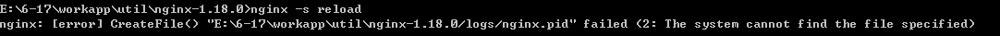

Nginx常用命令
1
2
3
4
5
6
7
8
9
10
11
12
13
14
15
16
17
18
19
20
| # 查看nginx位置
# nginx: /usr/local/nginx
whereis nginx
cd /usr/local/nginx/sbin
# 启动nginx
./nginx
# 停止
./nginx -s stop
# 安全退出
./nginx -s quit
# ***重新加载配置文件***
./nginx -s reload
# 查看nginx进程
ps aux|grep nginx
|
使用
使用jar包一个项目启动两次（jar包项目yml配置文件中必须配置server.port）
1
2
3
| java -jar eureka-0.0.1-SNAPSHOT.jar --server.prot=8080
java -jar eureka-0.0.1-SNAPSHOT.jar --server.prot=8081
|
模拟用户访问端口8080及8081两个项目，肯定不能让用户进行端口切换
因此使用nginx进行反向代理，用户通过同一个端口访问两个不同的项目
配置文件
Linux系统配置文件位于config/nginx.conf
windows系统配置文件位于conf/nginx.conf
配置文件信息–说明
1
2
3
4
5
6
7
8
9
10
11
12
13
14
15
16
17
18
19
20
21
22
23
24
25
26
27
28
29
30
31
32
33
34
35
36
37
38
39
40
41
42
43
44
45
46
47
48
| # 一. 全局配置
# 二. 最大连接数及事件监听
events {
worker_connections 1024;
}
# 三. http
http {
# 1. http配置
include mime.types;
# 2. 负载均衡配置
# xx为名字，可随便起，但必须与下边server代理中location下的proxy_pass配置相对应
# weight表示权重
upstream xx {
# 服务器资源
server 127.0.0.1:8080 weight=1;
server 127.0.0.1:8081 weight=1;
}
# 3. 端口反向代理
server {
listen 80;
server_name localhost;
# 代理
location / {
# 反向代理
proxy_pass http://xx;
}
# location配置
# 即若访问user目录时访问121服务器，若访问admin目录时，则访问122服务器
location /user {
# 121 服务器
}
location /admin {
# 122 服务器
}
}
# 另一个端口
server {
listen 443;
server_name localhost;
# 代理
}
}
|
配置文件信息–实际配置
1
2
3
4
5
6
7
8
9
10
11
12
13
14
15
16
17
18
19
20
21
22
23
24
25
26
27
28
29
30
31
32
33
34
35
36
37
38
39
40
41
42
43
44
45
46
47
48
49
50
51
52
53
54
55
56
57
58
59
60
61
62
63
64
65
66
67
68
69
70
71
72
73
74
75
76
77
78
79
80
81
82
83
84
85
86
87
88
89
90
91
92
93
94
95
96
97
98
99
100
101
102
103
104
105
106
107
108
109
110
111
112
113
114
115
116
117
118
119
120
121
122
123
124
125
126
127
128
129
130
131
132
133
134
|
# 一. 全局配置，配置全局生效
# 可指定用户、进程等
#user nobody;
worker_processes 1;
#error_log logs/error.log;
#error_log logs/error.log notice;
#error_log logs/error.log info;
#pid logs/nginx.pid;
# 二. 最大连接数及事件监听
events {
worker_connections 1024;
}
# 三. http
http {
# 1. http配置
include mime.types;
default_type application/octet-stream;
#log_format main '$remote_addr - $remote_user [$time_local] "$request" '
# '$status $body_bytes_sent "$http_referer" '
# '"$http_user_agent" "$http_x_forwarded_for"';
#access_log logs/access.log main;
sendfile on;
#tcp_nopush on;
#keepalive_timeout 0;
keepalive_timeout 65;
#gzip on;
# 负载均衡
upstream myupstream {
# 服务器资源
server 127.0.0.1:8081 weight=1;
server 127.0.0.1:8082 weight=1;
}
server {
# 监听端口
listen 80;
server_name localhost;
# 代理
#charset koi8-r;
#access_log logs/host.access.log main;
location / {
root html;
index index.html index.htm;
# 代理
proxy_pass http://myupstream;
}
#error_page 404 /404.html;
# redirect server error pages to the static page /50x.html
#
error_page 500 502 503 504 /50x.html;
location = /50x.html {
root html;
}
# proxy the PHP scripts to Apache listening on 127.0.0.1:80
#
#location ~ \.php$ {
# proxy_pass http://127.0.0.1;
#}
# pass the PHP scripts to FastCGI server listening on 127.0.0.1:9000
#
#location ~ \.php$ {
# root html;
# fastcgi_pass 127.0.0.1:9000;
# fastcgi_index index.php;
# fastcgi_param SCRIPT_FILENAME /scripts$fastcgi_script_name;
# include fastcgi_params;
#}
# deny access to .htaccess files, if Apache's document root
# concurs with nginx's one
#
#location ~ /\.ht {
# deny all;
#}
}
# another virtual host using mix of IP-, name-, and port-based configuration
#
#server {
# listen 8000;
# listen somename:8080;
# server_name somename alias another.alias;
# location / {
# root html;
# index index.html index.htm;
# }
#}
# HTTPS server
#
#server {
# listen 443 ssl;
# server_name localhost;
# ssl_certificate cert.pem;
# ssl_certificate_key cert.key;
# ssl_session_cache shared:SSL:1m;
# ssl_session_timeout 5m;
# ssl_ciphers HIGH:!aNULL:!MD5;
# ssl_prefer_server_ciphers on;
# location / {
# root html;
# index index.html index.htm;
# }
#}
}
|
主要配置
1
2
3
4
5
6
7
8
9
10
11
12
| # 负载均衡
upstream myupstream {
# 服务器资源 weight为权重
server 116.63.156.3:8088 weight=1;
server 192.168.11.110:8088 weight=1;
}
location / {
root html;
index index.html index.htm;
proxy_pass http://myupstream;
}
|
本次配置意为
若nginx服务器为192.168.11.121
若使用 192.168.11.121 访问服务器（最后边的/一般会省略）
则会被代理为 http:// + myupstream（负载均衡中的服务器资源）
即访问的可能为 http://116.63.156.3:8088
而，若访问的是192.168.11.121/static/login.html
则会被代理为 http://116.63.156.3:8088/static/login.html
问题
- 报错原因为nginx可能未启动

- 配置时单个upstream负载均衡中要配置相同的项目资源，否则会提示静态资源获取异常
- 每项配置都必须以
;结尾
其他 nginx配置
动静分离
rewrite